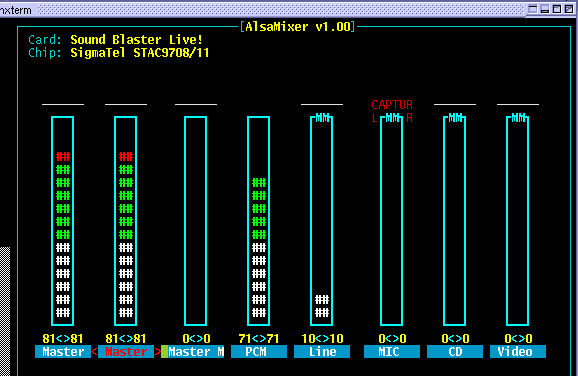
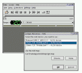

![[LinuxFocus-icon]](alsamidi.files/logolftop_319x45.gif) |
| Домой | Карта | Индекс | Поиск |
| | |
| Новости |
| |
Архивы |
| |
Ссылки |
| |
Про LF
| |
| Эта заметка доступна
на: English
Castellano
ChineseGB
Deutsch
Francais
Italiano
Nederlands
Russian
Turkce
Polish
|
автор Guido Socher (homepage)
Об авторе:
Guido нравится Linux не только за возможности, предоставляемые этой
системой для ее изучения, но и за творчество людей, создающих эту систему.
Перевод на Русский:
Kirill
Pukhlyakov <kirill(at)linuxfocus.org>
Содержание:
- Для
начала...
- Что
нам надо
- midi
- /etc/modules.conf
- Используем
alsa и midi
- Ссылки
- Страница
отзывов
|
Используем alsa для проигрывания midi файлов.
Резюме:
Midi - музыкальный формат файлов, не содержащий собственно звуков, но
описывающий способы воспроизведения звука. Это можно сравнить с нотным листом,
где каждая нота является символическим представлением звука. Midi - файлы
небольшие по размеру, в сравнении например с wav - файлами.
Чтобы
преобразовать midi файл в звук необходим midi синтезатор. Синтезатор может быть
как на уровне устройства, так и на уровне софта - на самом деле это набор звуков
какого - либо инструмента (например пианино) для воспроизведения нужного. Эти
наборы звуков более известны как "soundfont".
Прочитав заметку вы
узнаете как использовать Alsa (advanced linux sound architecture) в качестве
midi синтезатора.
_________________ _________________
_________________
Для начала...
Всего несколько лет назад такие звуковые карточки как
"Gravis UltraSound" или "SoundBlaster Gold" продавались в любом компьютерном
магазине. В этих карточках был реализован midi синтезатор. Но к сожалению в
настоящее время эти карточки уже не купить, но даже если вы их где - нибудь
найдете - они вряд ли подойдут к вашему новому компьютеру, потому что для их
работы нужна ISA шина, в то время как в современных используют PCI или даже
звуковой чип может быть на борту вашей материнской платы. Но вряд ли эти чипы
реализуют midi синтезатор. Посмотрите на
список звуковых карт, поддерживаемых alsa. На самом деле сегодня
единственная звуковая карта, реализующая midi синтезатор, которую можно купить в
компьютерном магазине - это Soundblaster live.
Если у вас нет такой
карты - вам придется эмулировать с помощью софта, о чем я вам и расскажу.
Что нам надо
В настоящее время проект Alsa находится в переходном этапе.
Стабильная версия - 0.5, а новая 0.9 - в процессе разработки. Если вы хотите
использовать midi - приложения с alsa - вам лучше использовать версию 0.5,
потому что сейчас еще наверное нет приложений для версии 0.9 и к тому же
интерфейсы между версиями 0.5 и 0.9 несовместимы (обратите внимание: говоря о
проблеме версии 0.9 я имею в виду только midi, ни wav - файлы, ни PCM таких
проблем не имеют).
Для версии 0.5 необходимы следующие пакеты :
- alsa-driver-0.5.12a.tar.bz2
- alsa-lib-0.5.10b.tar.bz2
- alsa-utils-0.5.10.tar.bz2
Информацию о том как скомпилировать alsa вы найдете в alsa howto (см.
ссылки). В общем случае необхдимо выполнить следующую команду :
tar jxvf alsa-driver-0.5.12a.tar.bz2
cd
alsa-driver-0.5.12a
./configure --with-sequencer=yes --with-oss=yes
--with-isapnp=no
make
make install
./snddevices
для драйвера и
"./configure;make;make install" для всего остального.
После инсталляции
вы можете загрузить модули в ядро. Для soundblaster live (=emu10k1 chip) это
надо сделать так :
modprobe snd-card-emu10k1
modprobe
snd-synth-emu10k1
modprobe snd-seq-midi
modprobe snd-pcm-oss
modprobe
snd-mixer-oss
modprobe snd-seq-oss
Для других карт просто замените
первые две строки модулями для вашей карты (например snd-card-via686a для
встроенной карты на базе чипсета via 686). Mandrake и Suse поддерживают alsa и
вы можете также распознать вашу карту и настроить ее приложениями, входящими в
дистрибутив (harddrake и yast2). Если вы не знаете чипсет вашего компьютера вы
можете попробовать команду "lspci -v" (lspci входит в пакет pciutils).
Теперь самое время проверить как работает у вас звук. Запустите
программу
alsamixer
и нажмите "m" для расстройки master и pcm уровня
громкости и потом, используя стрелки измените уровень. Нажмите Esc чтобы
завершить работу alsamixer когда все проверите.

Чтобы
сохранить настройки в /etc/asound.conf выполните команду
/usr/sbin/alsactl store
Теперь запускаем
play flute.wav
и
слышим звук. Если звука нет - обратите внимание на файлы /proc/asound/devices и
/proc/asound/oss-devices. Там должны быть "mixer" и "digital audio" (мои
файлы).
Это был тест для pcm oss эмуляции и звука. Дальше я объясню
как это все добавить в /etc/modules.conf чтобы все это выполнялось
автоматически, но сейчас нам надо заставить работать midi.
midi
Если у вас звуковая карта со встроенным midi синтезатором (например
sound blaster live) - все что вам нужно это загрузить "soundfont". Если у вас
нет такой карты - вам необходимо установить timidity (ищите url для загрузки в
ссылках) и использовать в качестве alsa midi синтезатора. Приложения
использующие alsa не заметят никакой разницы.
Загружаем
soundfontУбедитесь, что у вас установлено приложение sfxload
(/bin/sfxload). Если его нет в вашей системе - установите его, оно входит в
пакет awesfx (поищите его на вашем CD с дистрибутивом Linux или http://mitglied.lycos.de/iwai/awedrv.html).
Дальше, скопируйте файл 8MBGMSFX.SF2 с CD от Soundblaster Live
(/mnt/cdrom/AUDIO/Common/SFBANK/8MBGMSFX.SF2) в /etc/midi/8MBGMSFX.SF2. Чтобы
загрузить soundfont выполните команду :
/bin/sfxload /etc/midi/8MBGMSFX.SF2
Хорошее приложеие для
тестирования - pmidi (см. ссылки). Выполните
pmidi -l
Вы увидите
следующее на экране :
Port Client name Port name
64:0 External MIDI 0 MIDI
0-0
65:0 Emu10k1 WaveTable Emu10k1 Port 0
65:1 Emu10k1 WaveTable Emu10k1
Port 1
65:2 Emu10k1 WaveTable Emu10k1 Port 2
65:3 Emu10k1 WaveTable
Emu10k1 Port 3
Теперь запустите
pmidi -p 65:0 test.mid
и
вы услышите звук из вашего midi файла. Cool!
Используем TiMidity в
качестве софтового синтезатораЗакачайте пакет
TiMidity++-2.11.3.tar.gz (см. ссылки), распакуйте его (tar zxvf
TiMidity++-2.11.3.tar.gz) и отредактируйте файл common.makefile.in. Необходимо
раскомментировать строку CFLAGS для pentium gcc:
CFLAGS = -O3 -mpentium -march=pentium -fomit-frame-pointer
\
-funroll-all-loops -malign-double -ffast-math
Теперь вы можете добавить
различные графические интерфейсы к timidity, но первое, что нам надо - это опция
"--enable-alsaseq", тем более, что это не мешает нам добавить и другие опции, в
частности интерфейсы :
./configure --enable-ncurses --enable-xaw --enable-spectrogram
--enable-xaw=dynamic --enable-audio=oss,alsa --enable-alsaseq
--prefix=/usr/local/timidity-2.11.3
make
make install
Этими
манипуляциями мы установим timidity в /usr/local/timidity-2.11.3/bin, оставив
при этом существующую инсталляцию нетронутой. Мы повторно инсталлировали
timidity по причине того, что до сих пор я не встречал ни одного дистрибутива
Linux, в котором интерфейс alsaseq был бы установлен по умолчанию.
Для
timidity вам необходимы soundfonts. Сейчас их еще называют инструментальными
файлами. Хороший и наиболее полный набор инструментальных файлов достаточно
большого размера ( примерно 10 Мб ). Проще всего получить их - установив
timidity++ с вашего дистрибутивного CD и скопировать оттуда эти файлы ( например
timidity++-2.11.3-1.i386.rpm
download for redhat 7.3 ). Чтобы скопировать файлы из
/usr/share/timidity/instruments в
/usr/local/timidity-2.11.3/share/timidity/instruments выполните :
cd /usr
find share/timidity -print | cpio -dump
/usr/local/timidity-2.11.3
Теперь мы готовы протестировать timidity root'ом:
/usr/local/timidity-2.11.3/bin/timidity -iA -B2,8 -Os
-EFreverb=0
TiMidity starting in ALSA server mode
set
SCHED_FIFO
Opening sequencer port: 128:0 128:1
и затем pmidi -l:
Port Client name Port name
128:0 Client-128 TiMidity port
0
128:1 Client-128 TiMidity port 1
Опс, теперь у нас 2 порта с
TiMidity синтезатором.
Теперь
pmidi -p 128:0 test.mid
и
слушаем midi файл.
/etc/modules.conf
Если у вас звуковая карта soundblaster live вы можете
добавить эти строки в файл /etc/modules.conf для автоматической настройки и
загрузки модулей :
alias char-major-116 snd
alias char-major-14 soundcore
alias
snd-card-0 snd-card-emu10k1
alias sound-slot-0 snd-card-0
alias
sound-service-0-0 snd-mixer-oss
alias sound-service-0-1 snd-seq-oss
alias
sound-service-0-3 snd-pcm-oss
alias sound-service-0-8 snd-seq-oss
alias
sound-service-0-12 snd-pcm-oss
alias midi snd-synth-emu10k1
below
snd-seq-oss snd-synth-emu10k1
post-install snd-synth-emu10k1 /bin/sfxload
/etc/midi/8MBGMSFX.SF2 ; alsactl restore
# uncomment to save volume settings
at shutdown:
#pre-remove snd-synth-emu10k1 alsactl store
Для карт без
midi синтезатора, например для встроенной на via686 :
alias char-major-116 snd
alias char-major-14 soundcore
alias
snd-card-0 snd-card-via686a
alias sound-slot-0 snd-card-0
alias
sound-service-0-0 snd-mixer-oss
alias sound-service-0-3 snd-pcm-oss
alias
sound-service-0-12 snd-pcm-oss
# restore original mixer:
post-install
snd-card-via686a alsactl restore
# uncomment to save volume settings at
shutdown:
#pre-remove snd-synth-emu10k1 alsactl store
Для автозагрузки
timidiy предлагаю добавить следующую строку в файл /etc/init.d/alsasound ( этот
скрипт инсталлируется вместе с драйвером, но не активизируется ). Для
активизации используйте команду chkconfig
echo "starting
timidity"
timidiy=/usr/local/timidity-2.11.3/bin/timidity # do not forget the
"&" in the next line:
$timidity -iA -B2,8 -Os -EFreverb=0 > /dev/null
&
Используем alsa и midi

Вы уже попробовали проигрывать midi файлы программой
pmidi. В состав KDE входит отличный плейер kmid ( не путайте с kmidi ). Вы
можете скомпилировать Kmid как с поддержкой alsa, так и без нее. Redhat
использует OSS, а Mandrake и Suse - Alsa. Вы можете использовать в Redhat
бинарники Mandrake.
Эта заметка также предназначена объяснить инсталляцию
alsa, что будет нам полезно при изучении других программ, о которых мы поговорим
в следующих заметках. Например заметка про Jazz - mide sequencer и редактор midi
файлов. В конце заметки вы найдете ссылки к другим приложениям.
Есть
такие приложения как timidiy ( timidity -ig запускает gtk интерфейс ) или kmidi
( не путайте с kmid ), у которых встроен софтовый синтезатор. В этом случае вам
не нужен midi синтезатор ни на уровне устройств, ни на уровне ядра. Но вообще-то
предпочтительнее иметь единый midi api, чем отдельный в каждом
приложении.
В настоящее время в Alsa происходят большие изменения. Как
было сказано ранее - версия 0.9 не работает со многими приложениями, но версия
0.5 также не лишена проблем. В частности не работает эмуляция OSS
sequencer(/dev/sequencer), нормальная работа возможна только со старыми
звуковыми картами awe, которые сейчас купить достаточно сложно. Возможно что-то
поменяется с выходом версии 0.9. Эта заметка будет вам полезна в будущем - для
версии 0.9, необходимо будет обратить внимание на названия модулей - может быть
они поменяются и не будут такими как в версии 0.5. Но основная идея будет та же.
Ссылки
- Alsa howto: www.amelek.gda.pl/avr/
- Проект Alsa: http://www.alsa-project.org/
- Закачайте TiMidity++-2.11.3.tar.gz с этого сервера:TiMidity++-2.11.3.tar.gz
- Софтовый midi синтезатор Timidity:http://www.goice.co.jp/member/mo/timidity/dist/
- Midi-howto: http://www.midi-howto.com/
- pmidi midi плейер: pmidi-1.4.2.tar.gz
(с
http://download.sourceforge.net/pmidi/ или
http://www.parabola.demon.co.uk/alsa/pmidi.html )
- Маленький и большой midi файлы для тестирования: test.mid
bigstar.mid
- страница
ресурсов этой заметки
- Midi приложения для Linux http://www.linuxsound.at/midi.html
- Sound & MIDI софт для Linux http://linux-sound.org/one-page.html
(или http://www.linuxsound.at)
Страница отзывов
У каждой заметки есть страница отзывов. На этой
странице вы можете оставить свой комментарий или просмотреть комментарии других
читателей :
Webpages
maintained by the LinuxFocus Editor team
©
Guido Socher, FDL
LinuxFocus.org
Click here to report a fault or send a comment to
LinuxFocus
|
Translation
information:
| en --> -- : Guido Socher (homepage) |
| en --> ru: Kirill Pukhlyakov
<kirill(at)linuxfocus.org> | |
2002-09-05, generated by lfparser version 2.30